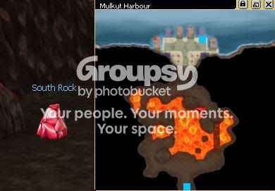

หน้า 1 จากทั้งหมด 1
เควสอาชีฟTatarabe ทำไม่ได้

โพสต์แล้ว:
จันทร์ 27 ส.ค. 2007 11:45 pmโดย ECO
เควสอาชีฟTatarabe
เวล19ที่ไห้หาฮอดสโตนหาไห้มันเเล้วทำใมส่งไม่ได้
โพสต์แล้ว:
อังคาร 28 ส.ค. 2007 7:37 amโดย ECO
หาจากไหนคะ ต้องเป็นสีเทาที่ได้จากหินดันใต้นะคะ ไม่ใส่สีแดงที่ใช้กันหนาวที่ซื้อที่ด่านเหนือนะคะ
โพสต์แล้ว:
เสาร์ 01 ก.ย. 2007 4:00 pmโดย ECO
•ไปคุยกับ Tatarabe Master
•ไปหา SteelNegget 3 ชิ้น (จะหาด้วยวิธีใดก็ได้)
•ไปหา Tatarabe Master อีกครั้ง
•ถอดอุปกรณ์ทุกอย่างที่ใส่อยู่แล้วคุยกับ Tatarabe Master
•แล้วใส่อุปกรณ์ทั้งหมด
•คุยกับ Tatarabe Master อีกที แล้วก็จะได้ หมวกทาทา และ เครื่องทำแร่
~เป็นอันจบครับ~
โพสต์แล้ว:
พุธ 05 ก.ย. 2007 3:03 pmโดย ECO
hotstone ที่ใช้ในเควสทาทานะครับ มันเป้นสีเทาครับ คนละอันกับที่ดรอปจากการตีหินที่เกาะไทนี่นะครับที่เป้นสีแดง
โพสต์แล้ว:
พุธ 05 ก.ย. 2007 4:28 pmโดย ECO
blakmoly เขียน:•ไปคุยกับ Tatarabe Master
•ไปหา SteelNegget 3 ชิ้น (จะหาด้วยวิธีใดก็ได้)
•ไปหา Tatarabe Master อีกครั้ง
•ถอดอุปกรณ์ทุกอย่างที่ใส่อยู่แล้วคุยกับ Tatarabe Master
•แล้วใส่อุปกรณ์ทั้งหมด
•คุยกับ Tatarabe Master อีกที แล้วก็จะได้ หมวกทาทา และ เครื่องทำแร่
~เป็นอันจบครับ~
อันนี้รีบตอบไปหน่อย แต่ก็ละเอียดดีครับ เหอ เหอ
โพสต์แล้ว:
อังคาร 11 ก.ย. 2007 3:05 amโดย ECO
ซึ่งอันที่จะต้องใช้ทำเควสของสายอาชีพ ทาทาราเบ นั้นคือก้อนสีเทา นะครับ
หาด๊อบได้ไมยากครับ จาก
South Rock

เข้าทางดันเจี้ยนทางใต้ ชั้น1 ครับ
โพสต์แล้ว:
อาทิตย์ 16 ก.ย. 2007 12:52 amโดย ECO
ผมว่าทางที่ดีน่ะเควสนี้ไม่จำเป็นอย่ารับเลยคับด็อปยากมาก